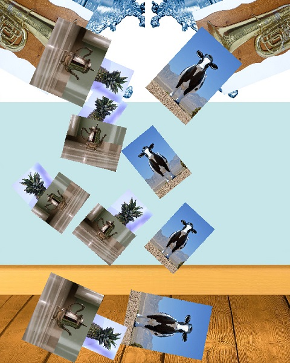

For this assignment I needed to pick at least three images and to create Dali-inspired composition. I tried to apply all my photoshop skills I learned during this semester so far. I pickeda tube,a cow, splash images, and combine teapot and pinaple together. I applied warp effect to squeeze the cow and tea-pinnaple from the tube. Then, I made some copies of the cow's layer and applied different filters for some, adding blur effect for some of them, and transforming and resizing them making flying effect. Also I changed splashing color, and made tea pot and pinapple lid the same color.